Como sugestão, configure a opção de leitura de caracteres e de pontuação de seu leitor de tela para o grau máximo de leitura, a fim de que os códigos disponibilizados neste material sejam lidos corretamente. No caso do NVDA (NonVisual Desktop Access), para localizar a opção Grau de pontuação/símbolos, acesse Preferências – Configurações – Fala. Altere o padrão Pouco para Tudo. Dessa forma, o leitor passará a ler os segmentos de código em sua totalidade.
Cascading style sheet (CSS), ou, se preferir, folha de estilos em cascata, é uma linguagem utilizada para estilizar elementos que são escritos em linguagem de marcação como o próprio HTML (hyper text markup language, ou linguagem de marcação de hipertexto). Ele é o responsável por tornar um website muito mais visual e de fácil navegação para os usuários, dando cores, estilos, fontes e muitos outros efeitos que conseguem trazer uma visualização muito mais agradável.
O CSS é o responsável por estilizar e posicionar elementos de uma página HTML. Enquanto HTML define estrutura, CSS define estilo visual.
O objeto de estudo deste conteúdo será o CSS3, que foi lançado em 2012 e é, até hoje, a versão mais recente do CSS. Essa versão trouxe algumas alterações bem importantes e que facilitam muito a criação de websites mais dinâmicos.
Mas, afinal, o que é essa folha de estilos em cascata? Quando se lida com CSS, é preciso levar em consideração que se estará trabalhando com um conjunto de regras e uma sintaxe específica para estilização. Essas regras, assim como os seletores, estarão definidas dentro de um bloco de código em que serão aplicadas as alterações desejadas.
Parece complicado, não é? Pois então, isso será desmistificado. Veja o exemplo a seguir.
<body>
<p>Olá, bem-vindo ao conteúdo de CSS do Curso Técnico em Desenvolvimento de Sistemas! </p>
</body>
Acima, há um bloco de HTML, com apenas um parágrafo, explicitado pela tag <p>. Quando isso for exibido em um navegador, aparecerá desta forma:
Figura 1 – Exemplo de exibição em HTML
Fonte: Senac EAD (2023)
Frase “Olá, bem-vindo ao conteúdo de CSS do Curso Técnico em Desenvolvimento de Sistemas!” em fonte Times News Roman preta e com fundo branco.
Simples, não é? Porém, como se pode ver, o texto está em uma fonte padrão e em um tamanho padrão. E agora é a hora de o CSS brilhar! Com ele, você poderá estilizar esse parágrafo como quiser. Mude três coisas: a fonte, o tamanho e a cor.
Existem três maneiras de se utilizar o CSS dentro de um arquivo de HTML. As outras maneiras serão exploradas em breve neste conteúdo, porém, para esses exemplos, será utilizado um arquivo exclusivo para o CSS.
p {
font-family: Arial;
font-size: large;
color: red;
}
Como foi utilizada a tag <p> no HTML, basta referenciá-la no CSS e, entre chaves, “{ }”, colocar os comandos necessários. No exemplo anterior, o font-family busca a fonte que você quer, o font-size aumenta o tamanho (é possível usar números também) e color muda a cor da fonte dentro de uma biblioteca gigantesca de cores, que podem ser usadas com o seu nome em inglês, ou até mesmo com o código hexadecimal delas. Vermelho, por exemplo, seria #FF0000. Veja como ficou o parágrafo agora:
Figura 2 – Exemplo de exibição de texto com CSS aplicado
Fonte: Senac EAD (2023)
Frase “Olá, bem-vindo ao conteúdo de CSS do Curso Técnico em Desenvolvimento de Sistemas!” em fonte Arial vermelha e com fundo branco.
As regras CSS são aplicadas em ordem de precedência, começando pelo nível mais alto e descendo até o nível mais baixo. Se houver regras conflitantes em um mesmo nível, a regra mais específica terá precedência sobre a regra mais genérica.
Em resumo, o modelo Cascata em CSS é uma técnica para determinar a ordem de aplicação das propriedades de estilo aos elementos HTML, levando em consideração a especificidade das regras definidas e a ordem de precedência dos níveis de cascata.
No exemplo anterior, foi feito apenas um <p>, certo? Porém, seria possível expandir mais ainda. Cheque este código HTML:
<body>
<p>Olá, bem-vindo ao conteúdo de CSS do Curso Técnico em Desenvolvimento de Sistemas! </p>
<p>Me chamo <span>Pedro Henrique Flores </span> e serei o tutor de vocês! </p>
<p>Acesse o site do SENAC EAD clicando <a href="https://www.ead.senac.br">AQUI! </a> </p>
</body>
Veja que existe um <span> e também um <a> dentro do <p>. Graças à lógica por trás do modelo Cascata, apenas serão definidas regras específicas para esses novos elementos. A partir daí, haverá as regras do <p> aplicadas em todos. Veja:
p {
color: blue;
font-weight: bold;
}
span {
color: red;
}
a {
color: green;
}
Veja, agora, o resultado:
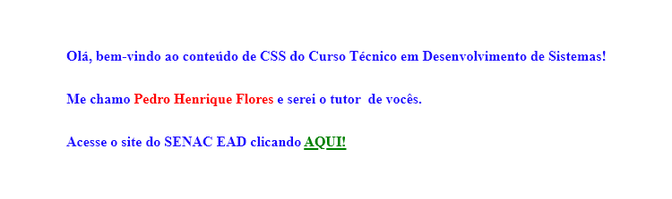Figura 3 – Exemplo de regras do modelo Cascata Fonte: Senac EAD (2023)
Frase 1: “Olá, bem-vindo ao conteúdo de CSS do Curso Técnico em Desenvolvimento de Sistemas!” em azul e negrito. Frase 2: “Me chamo Pedro Henrique Flores e serei o tutor de vocês!” com o nome “Pedro Henrique Flores” em vermelho. Frase 3: “Acesse o site do SENAC EAD clicando AQUI” com a palavra “AQUI” em verde.
Você já entendeu o CSS e como ele funciona e é aplicado nos elementos HTML, mas, agora, entenderá qual é a melhor forma de utilizar esses elementos. É importante entender que existem três formas de utilizar tais elementos e existe um processo hierárquico e até mesmo de boas práticas e padronização nesse processo.
Inline (em linha): utilizar as tags de estilização de CSS dentro do próprio elemento HTML. Não é recomendado o uso dessa prática, pois o código fica extremamente poluído e dificulta o desenvolvimento front-end como um todo, principalmente quando se começa a utilizar o JavaScript. Exemplo:
<body>
<p style="color: blue; font-weight: bold;">Usando o CSS inline!</p>
</body>
Internal (interno): quando existe uma página específica e diferente das demais (e serão usadas poucas alterações no CSS), pode-se, tranquilamente, utilizar o CSS interno, bastando apenas declarar o <style> dentro da tag <head> do arquivo HTML, e a partir daí utilizar seletores, classes e afins para estilizar como preferir. Exemplo:
<html>
<head>
<style>
p {
color: blue;
font-weight: bold;
}
</style>
<meta charset="UTF-8">
</head>
<body>
<p>Usando o CSS inline!</p>
</body>
</html>
External (externo): por fim, sem dúvidas, a melhor e mais padrão das opções é criar um arquivo exclusivo para o CSS e apenas o referenciar no arquivo HTML. Nesse arquivo, é possível separar todas as classes e todos os elementos que serão estilizados, facilitando bastante a organização de qualquer desenvolvedor.
<html>
<head>
<link rel="stylesheet" href="index.css">
<meta charset="UTF-8">
</head>
<body>
<p>Usando o CSS external!</p>
</body>
</html>
Apenas chamando a linha <link rel=”stylesheet” href=”[nomeDoArquivo.css]”> e o IDE (ambiente de desenvolvimento integrado) encontrando esse arquivo, puxará todas estilizações dentro dele.
/*ESTILIZANDO O PARÁGRAFO*/
p {
color: blue;
font-weight: bold;
}
/*ESTILIZANDO O PARÁGRAFO*/
Pronto!
A ordem dos fatores altera o produto! O CSS é algo muito volátil e ele respeita uma ordem de hierarquia. Então, se, por ventura, elementos inline forem usados e depois for feito de forma diferente em um arquivo externo, o inline será respeitado e o externo será ignorado! Sendo assim, sempre opte por apenas uma das opções, ok?
Os seletores são a chave para organizar o CSS e mantê-lo coeso dentro do arquivo. No exemplo que você viu anteriormente, usou-se o seletor p para poder estilizar o arquivo. Contudo, é importante entender a ordem e a nomenclatura desses seletores. Veja como é simples:
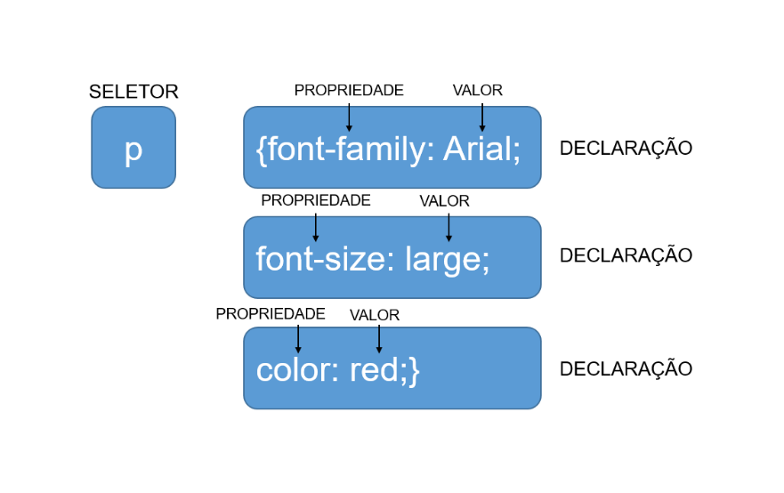
Figura 4 – Explicação visual da estrutura de CSS
Fonte: Senac EAD (2023)
À esquerda, uma caixa com rótulo seletor e texto interno “p”. À direita, caixa com texto “{font-family: Arial” e uma seta apontando para “font-family” escrita “PROPRIEDADE”. Outra seta onde está escrito “VALOR” aponta para “Arial”. À direita dessa caixa, é possível ler “DECLARAÇÃO”. Abaixo dessa caixa, outra caixa com texto “font-size: large;”, com seta “propriedade” apontada para “font-size” e seta “valor” apontada para “large”. À direita se lê “DECLARAÇÃO”. Abaixo dessa caixa, outra caixa com texto “color: red;}”, seta “propriedade” aponta para “color” e seta “valor” aponta para “red;”. À direita, “DECLARAÇÃO”.
É importante observar que cada seletor pode ter a própria estilização, e é aí que o CSS fica cada vez mais “rico”. Agora, você testará algumas novas regras e verá que o CSS pode (e irá) criar mais e mais caminhos para diversos tipos de estilizações. Comece com um HTML bem simples:
<body>
<h1>Aqui é título!</h1>
<h2>Aqui é um subtítulo!</h2>
<p>E aqui é nosso parágrafo!</p>
</body>
E vá direto para o CSS, agora com três seletores diferentes:
h1 {
font-family: Verdana;
text-align: center;
color: blue;
}
h2 {
font-family: Georgia;
text-align: center;
color: #008000;
}
p {
font-family: Arial;
font-size: large;
text-align: center;
color: red;
}
Veja o resultado de tudo isso:
Figura 5 – Exemplo de CSS usando vários seletores
Fonte: Senac EAD (2023)
No topo, um texto grande e negrito em fonte Verdana azul “Aqui é título”. Abaixo, texto “Aqui é um subtítulo” em verde, Times New Roman e menor que o de cima. Abaixo, ainda texto “E aqui é nosso parágrafo!” em vermelho, Arial e menor.
No exemplo anterior e nos exemplos seguintes, destaca-se apenas o trecho <body> do código HTML. Para os seus testes, sugere-se que, para cada exemplo, com o VSCode, crie um arquivo HTML em uma pasta (teste1.html, por exemplo), com uma estrutura básica como a seguinte:
<!DOCTYPE html>
<html>
<head>
<meta charset="utf-8">
<title>Testando CSS</title>
<link href="teste1.css" rel="stylesheet">
</head>
<body>
<!-- aqui vai o código do exemplo -->
</body>
</html>
Digite o código HTML proposto no exemplo substituindo o trecho com comentário, apenas tomando o cuidado de não repetir a tag <body></body>. Em seguida, crie um arquivo na mesma pasta para o CSS (teste1.css, por exemplo). É importante que a referência ao CSS destacada no código HTML acima tenha o mesmo nome do arquivo CSS que criou. Nesse arquivo, então, digite as regras CSS propostas. Teste tudo abrindo a página HTML no seu navegador e atualizando (F5 ou Ctrl + R) sempre que fizer uma modificação.
Legal, não é? Foram colocados três tipos de formatações diferentes dentro do próprio CSS e transformou-se aquele HTML simples em algo colorido e visualmente mais agradável e estilizado. Como se pode perceber, há ali três seletores diferentes: h1, h2 e p. Esses seletores tem o próprio bloco de código e a própria formatação, e tudo isso é papel do CSS trabalhando com o que foi estruturado no HTML. Porém, agora, você pensará e aumentará um pouco esse processo.
Como o seu navegador entende esses seletores? Essa é uma pergunta de extrema importância para entender como, quando e quais seletores você utilizará. Os três principais, e em ordem de especificidade, são:
Uma das técnicas mais simples e mais usadas no CSS é o uso do seletor universal. Esse seletor aplica em todas as tags qualquer formatação! Basta colocar no CSS o ícone do asterisco (*) e pronto! Geralmente se utiliza isso para formatações gerais no corpo das páginas, como fontes e espaçamentos que serão utilizados dentro de todo o site.
<body>
<h1>Vamos agora entender como funciona o seletor Universal</h1>
<h2>No CSS é bem simples de se aplicar</h2>
<p>E ele formatará todos os elementos aqui do HTML</p>
</body>
No CSS:
* {
font-family: 'Courier New', Courier, monospace;
font-weight: bold;
color: green;
text-align: center;
}
Veja o resultado:
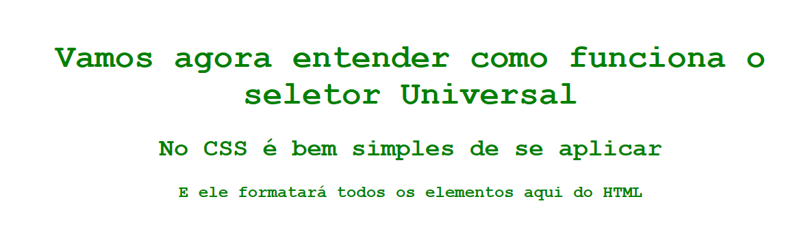
Figura 6 – Exemplo de uso do seletor universal
Fonte: Senac EAD (2023)
Frase 1: “Vamos agora entender como funciona o seletor Universal” em fundo branco e letras verdes. Frase 2: “No CSS é bem simples de se aplicar”. Frase 3: “E ele formatará todos os elementos aqui do HTML”.
Então, é possível perceber que há três tags diferentes, <h1>, <h2> e <p>, e, como se usa o seletor universal, aplicam-se nele quatro formatações: fonte (tipo e negrito), cor e alinhamento. Isso significa que todos elementos, a partir de agora, terão essas características. Simples, não é?
Tenha cuidado ao usar o seletor universal. Apesar de ser útil e simples o seu uso, ele tem uma especificidade baixa e, com isso, outros seletores sobrescreverão o que foi definido nele. Então, pense bem no que colocar nele como formatações gerais e até mesmo avalie se vale a pena utilizar!
Esse nome é, sem dúvidas, familiar, certo? Porém, tratando-se de CSS, é preciso entender que isso é muito diferente de orientação a objetos. No CSS, as classes serão um identificador para determinadas tags. Elas facilitarão (e muito) alguns padrões de fontes, cores, espaçamentos etc. dentro dos códigos e, sem dúvida, diminuirão a quantidade a ser digitada, ajudando a manter um padrão. Veja como isso fica ao ser implementado:
<body>
<h1 class="titulo">Aqui é título!</h1>
<h2 class="titulo">Aqui é um sub-título!</h2>
<p class="texto">E aqui é nosso parágrafo!</p>
<p class="texto">Aplicando a mesma classe da tag anterior</p>
</body>
No CSS:
.titulo {
text-align: center;
color:red;
}
.texto {
text-align: center;
color:blue;
}
Veja o resultado:
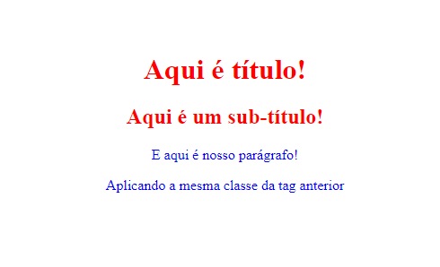
Figura 7 – Resultado da aplicação de classe
Fonte: Senac EAD (2023)
Página mostrando a frase “Aqui é título” e abaixo “Aqui é um subtítulo”, ambas vermelhas. Abaixo, frases “E aqui é nosso parágrafo” e “Aplicando a mesma classe da tag anterior”, ambas azuis.
Basta, no HTML, definir os nomes das classes que você utilizará e, dentro do CSS, utilizar o ponto (.), pois ele que define a nomenclatura da classe para ser alterada.
As classes serão o seletor mais utilizado por você durante o processo de criação de estilização. Elas individualizam os elementos e acabam tornando-os únicos para determinadas formatações, ao mesmo tempo que a mesma regra pode ser reutilizada em vários elementos, inclusive de tags diferentes. Serão bastante explorados, dentro do conteúdo, o funcionamento das classes e outras técnicas que facilitaram a diminuição e a estruturação de um código limpo e que seja de fácil leitura para todos os navegadores.
Por que se começa pela menor especificidade e termina na maior?
Os IDs dentro do HTML/CSS são especiais. Sempre que definir um ID no HTML e levar ao CSS, ele será a maior especificidade. Não importa se você colocar classes e afins, ele sempre comandará a hierarquia. Veja este exemplo:
<body>
<p class="classe1" id="idTexto">Testando a Classe e o ID</p>
<p class="classe2" id="idTexto">Testando a Classe e o ID</p>
</body>
E no CSS:
.classe1{
font-family: 'Courier New', Courier, monospace;
color: green;
}
.classe2{
font-family: 'Courier New', Courier, monospace;
color: red;
}
#idTexto {
font-family: Arial, Helvetica, sans-serif;
color: blue;
}
Agora, veja o resultado:
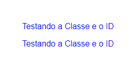
Figura 8 – Exemplo de ID em CSS
Fonte: Senac EAD (2023)
Mas qual é a vantagem de usar um ID? Pense da seguinte forma:
Um ID é feito para ser usado apenas uma vez em um arquivo HTML, e uma tag só pode ter um ID. Uma classe pode ser reusada quantas vezes forem necessárias em um arquivo HTML, e uma tag pode ter múltiplas classes.
Pensando em CSS, o ID será usado para algo muito específico e muito singular dentro de uma página. Elementos como <form>, <article>, <button> e afins são elementos que são mais únicos, diferentes de <p>, <h1>, <h2> e, principalmente, <div>.
Porém, ainda falando de ID, chega-se a um ponto superimportante de programação front-end. Quando se adentrar em JavaScript, os IDs serão de suma importância para usar e unir o HTML e a sua programação. O uso desse atributo (e de outros) ajudará a identificar e facilitará o processo de buscar determinados espaços em suas páginas, tornando-as dinâmicas como um todo.
Quando se lida com classes, existe mais uma técnica que é extremamente útil para a estilização. Em muitas situações, haverá algumas configurações similares entre classes ou que se replicarão em determinados espaços nas páginas e você desejará pequenas alterações. Então, é possível aplicar uma classe a mais dentro do mesmo elemento para que ele herde as estilizações da outra classe e tenha também a sua própria. Isso abre espaço para muita coisa e facilita (ainda mais) a limpeza e a organização dos códigos.
Confuso? Na realidade, é bem simples! Veja:
<body>
<div class="caixaDeTexto">
<p>Aqui é a nossa caixa verde!</p>
</div>
<div class="caixaDeTexto azul">
<p>Aqui é a nossa caixa azul!</p>
</div>
<div class="caixaDeTexto vermelha">
<p>Aqui é a nossa caixa vermelha!</p>
</div>
</body>
Se você analisar esse trecho de código, verá que se repete a classe caixaDeTexto e, em <div>, tem-se escrito “azul” e “vermelha” logo ao lado. Esse é o conceito de múltiplas classes no CSS. Usa-se o espaço para separar as classes e, depois, isso é trazido para dentro do CSS. Veja como fica simples:
.caixaDeTexto {
border: 4px solid green;
margin: .3em;
padding: .5em;
}
.caixaDeTexto.azul {
border-color: blue;
}
.caixaDeTexto.vermelha {
border-color: red;
}
A classe .caixaDeTexto define uma borda com sua grossura e tamanho, uma margem e um espaçamento interno. Agora as classes .azul e .vermelha fazem apenas as alterações específicas, herdando tudo que vem da classe .caixaDeTexto. Veja tudo isso no resultado final:
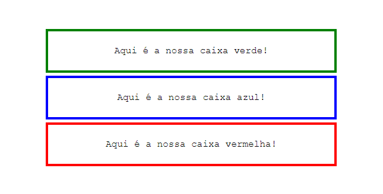
Figura 9 – Exemplo de múltiplas classes em CSS
Fonte: Senac EAD (2023)
Na imagem, há três caixas com bordas, uma abaixo da outra. A primeira com bordas verdes e a frase “Aqui é a nossa caixa verde!”. Abaixo, com bordas azuis e a frase “Aqui é a caixa azul”. Abaixo, com bordas vermelhas e a frase “Aqui é a nossa caixa vermelha”.
Com isso, consegue-se compreender uma grande gama de conhecimentos e técnicas para iniciar o CSS. Estrutura-se tudo no HTML e, a partir disso, parte-se diretamente para a estilização. O CSS torna tudo muito mais vivo dentro das páginas, e dominar os conceitos dos seletores fará toda a diferença.
Um dos atalhos e das técnicas para se trabalhar com CSS é o uso de regras encadeadas. O seu conceito é bem similar ao de múltiplas classes, mas agora não há necessidade de usar elas em si, e sim apenas os seletores.
Veja o código a seguir em HTML:
<body>
<div>
<h1>Aqui é o título dentro da div!</h1>
<p>Aqui é o parágrafo dentro da div!</p>
</div>
<p>Sou apenas um parágrafo fora da div!</p>
</body>
Tem-se uma <div> com dois elementos internos, <h1> e <p>, e um <p> fora dessa <div>; nenhuma classe, ID ou afins foram configurados, certo? Se você apenas colocasse no CSS o elemento p, ele configuraria todos os elementos <p> da página. Aqui, no caso, deseja-se apenas o <p> que está dentro da <div>. É agora que entra a regra encadeada!
div {
font-family: Arial, Helvetica, sans-serif;
}
div p {
font-weight: bold;
color: darkblue;
font-family: 'Courier New', Courier, monospace;
}
Veja o resultado final disso tudo:
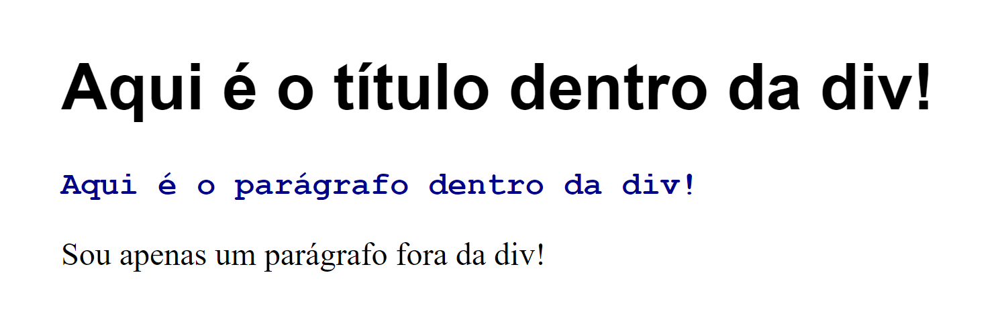
Figura 10 – Exemplo de regra encadeada
Fonte: Senac EAD (2023)
Página mostrando frase “Aqui é o título dentro da div!” em negrito e grande. Abaixo, menor e em fonte Corrier New azul, frase “aqui é o parágrafo dentro da div!”. Abaixo, uma frase em Times New Roman de tamanho pequeno “Sou apenas um parágrafo fora da div!”.
Como é possível perceber, a <div> recebeu a fonte Arial, porém o uso de div p avisou o CSS que todos os <p> dentro da <div> devem receber a fonte Courier New e a cor darkblue. Já o <p> que estava fora da <div> e sem nenhuma classe definida ficou sem formatação algum, pois no CSS a hierarquia foi respeitada. É algo que pode salvar o tempo de todos, e as regras encadeadas não têm limite, podendo ser usados dois, quatro, dez elementos encadeados sem problema!
A seguir, veja a seleção de algumas propriedades úteis de estilo:
| Propriedade | Descrição | Exemplo |
|---|---|---|
| background-color | Cor de fundo de um elemento. |
|
| background | Configurações de fundo de um elemento. Na mesma propriedade, é possível definir cor, imagem, repetição e posicionamento. |
|
| border | Definições de borda: espessura, estilo e cor |
|
| border-radius | Arredondamento de cantos de um elemento. É possível determinar um único valor para todos os cantos ou valores diferentes para cada canto. |
|
| font-family | Tipo de fonte. Quando se informa mais de um valor, a página tenta aplicar a primeira fonte; se não conseguir, tentará aplicar a segunda, e assim por diante |
|
| font-size | Tamanho de fonte. Pode usar valores absolutos (em pixels, cm, pt etc) ou relativos. |
|
| font-style | Estilo do texto. Geralmente usado para itálico. |
|
| font-weight | Espessura dos caracteres. Geralmente usado para negrito. |
|
| opacity | Transparência ou opacidade de um elemento. Admite valores de 0 (totalmente transparente) a 1 (totalmente opaco). |
|
| text-decoration | Decoração de um texto. Geralmente usado para sublinhado. Para retirar o estilo original de um hyperlink, é possível usar o valor none. |
|
Tabela 1 – Propriedades úteis de estilo
Fonte: Senac EAD (2023)
A seguir, veja a seleção de algumas propriedades úteis de dimensionamento e visibilidade de um elemento:
| Propriedade | Descrição | Exemplo |
|---|---|---|
| height | Altura de um elemento (uma imagem, por exemplo). Pode levar valores absolutos ou relativos. |
|
| line-height | Altura da linha de um elemento (div, por exemplo). |
|
| width | Largura de um elemento (uma imagem, por exemplo). Pode levar valores absolutos ou relativos. |
|
| visibility | Determina se o elemento está visível ou não. |
|
Tabela 2 – Propriedades úteis de dimensionamento e visibilidade
Fonte: Senac EAD (2023)
Você já lidou com cores, fontes e estruturas um pouco mais visuais, porém tudo isso não seria encaixado em uma boa página se não houvesse um trabalho minucioso de alinhamentos e espaçamentos de conteúdo. É essencial dominar e compreender essas técnicas para poder estruturar tudo que as páginas compreenderão, já que esses conteúdos precisam ser encaixados.
Pense em uma página em um website como um quebra-cabeça com espaços limitados, que está pronta para receber textos, imagens, links e tudo mais que o HTML possa oferecer, porém, para encaixar isso, existem diversas maneiras que o CSS utiliza para tornar tudo um pouco mais fácil.
Desde que o CSS3 foi implementado, construir e “encaixar as peças” desse quebra-cabeça ficou muito mais fácil, graças a dois simples conceitos chamados display e flex.
Hoje em dia, é importante ter estruturas de páginas que funcionam em qualquer tipo de dispositivo, então elementos como altura, largura, resolução, orientação e outros precisam ser levados em consideração para que funcionem tranquilamente. No passado, fazia-se à mão e tentava-se adaptar de várias maneiras e testando em diversas resoluções, mas o flex chegou para mudar e facilitar a estilização de estrutura. Veja como fica:
<div class="conteudo">
<div class="interno">Item</div>
<div class="interno">Item</div>
<div class="interno">Item</div>
<div class="interno">Item</div>
</div>
Aqui, observa-se o conteúdo, de maneira bem simples. Agora, no CSS, aplicam-se os diferentes tipos de display.
Display: block
.conteudo {
font-family: Lucida Console;
text-align: center;
display: block;
background-color: aquamarine;
width: 50%;
}
.interno {
margin-top: 5px;
padding-top: 5px;
background-color: yellow;
}
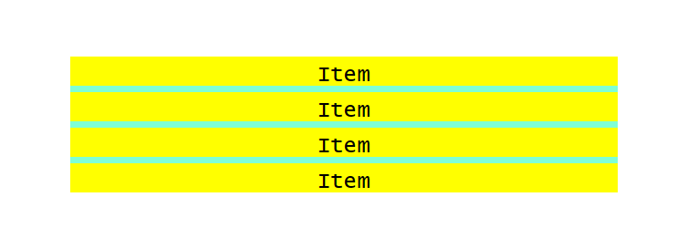
Figura 11 – Exemplo de display: block
Fonte: Senac EAD (2023)
Na imagem, há quatro linhas com o fundo amarelo e em cada linha está escrita a palavra “Item”.
O display: block, como o nome diz, cria um bloco para adaptar os conteúdos e exibe um abaixo do outro. Geralmente esse display é usado para adaptar um conteúdo que pode conter imagem e texto e que se adapte àquele espaço destinado a ele.
Display: inline
.conteudo {
display: inline;
background-color: aquamarine;
}
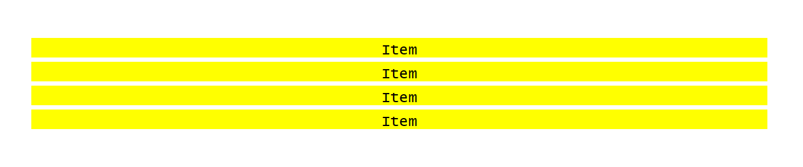
Figura 12 – Exemplo de display: inline
Fonte: Senac EAD (2023)
Na imagem, há quatro linhas com o fundo amarelo e em cada linha está escrita a palavra “Item”.
Já o display: inline ocupa o espaço de uma linha inteira para exibir o seu conteúdo. Perceba que o background-color foi completamente ignorado, pois a linha toda é ocupada. Geralmente esse display é usado para listagens ou menus.
Display: inline-block
.conteudo {
font-family: Lucida Console;
text-align: center;
display: inline-block;
background-color: aquamarine;
width: 20%;
}
.interno {
width: auto;
margin-top: 5px;
padding-top: 5px;
margin-bottom: 5px;
margin-left: 5px;
margin-right: 5px;
background-color: yellow;
}
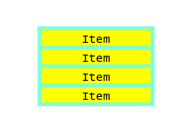
Figura 13 – Exemplo de display: inline-block
Fonte: Senac EAD (2023)
Na imagem, há quatro blocos com o fundo amarelo e em cada linha está escrita a palavra “Item”.
Agora, “unindo o melhor dos dois mundos”, o inline-block recebe os conteúdos de cada linha, preenche essas linhas e depois cria os blocos, um abaixo do outro. Quanto maior o conteúdo de cada linha, mais os blocos se adaptam. No exemplo anterior, é possível ver que colocando a width da <div> pai como 20% e da .interno como auto e apenas ajustando as margens, ele cria os blocos de uma maneira coesa.
Display: flex
.conteudo {
font-family: Lucida Console;
text-align: center;
display: flex;
background-color: aquamarine;
width: 30%;
}
.interno {
margin-top: 5px;
padding-top: 5px;
margin-bottom: 5px;
margin-left: 5px;
margin-right: 5px;
background-color: yellow;
}
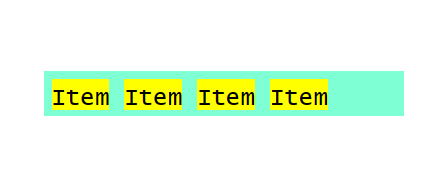
Figura 14 – Exemplo de display: flex
Fonte: Senac EAD (2023)
Na imagem, há quatro blocos com o fundo amarelo na mesma linha, e em cada bloco está escrita a palavra “Item”.
O display: flex preza pela responsividade, pela eficiência e pelos dinamismos dos seus conteúdos dentro das páginas. O flex distribui, igualitariamente, os conteúdos dentro do espaço que é dado a eles e, sem dúvida, adapta-se para cada dispositivo em que for utilizado. Sem dúvida, a utilização do flex economizará tempo e muitas dores de cabeça de quem estiver com a “mão na massa” dentro do CSS.
Até este momento, você está apenas organizando os conteúdos de <div> e afins e fazendo eles se adaptarem a um container. Porém, existem duas técnicas superimportantes que ajudam a organizar também os espaços entre os containers e o conteúdo de dentro deles. Dominar essas duas técnicas é mais um passo para construir excelentes páginas!
É bem possível que essas duas palavras sejam as mais usadas por vocês durante todo o processo de construção de suas páginas. Mas também é fácil de confundir a função de cada uma delas e como elas funcionam dentro do CSS.
Imagine uma <div>, um pequeno container. Esse container é uma “caixa” que, dentro dela, existe um conteúdo. Quando se cria mais de uma <div>, uma abaixo da outra, e aplica-se uma borda, elas ficarão grudadas. Veja este exemplo:
<body>
<div class="caixa">
<img src="senac logo.webp"/>
<p>Aqui é uma div!</p>
</div>
<div class="caixa">
<img src="senac logo.webp"/>
<p>Aqui é uma div!</p>
</div>
</body>
No CSS:
* {
text-align: center;
font-family: Arial, Helvetica, sans-serif;
}
.caixa{
border: 4px solid blue;
}
.caixa img {
width: 10%;
}
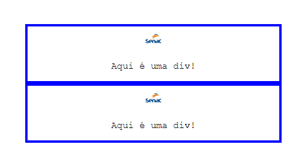
Figura 15 – Exemplo de mais de uma <div>
Fonte: Senac EAD (2023)
Na imagem, há dois blocos com bordas azuis e fundo branco. Dentro do bloco há o logo do Senac e, logo abaixo, a frase “Aqui é uma div”.
Na figura anterior, veja que as bordas estão grudadas e uma abaixo da outra. Isso acontece porque não se aplicou margin entre elas. A figura está bem no centro, mas se você quiser mover apenas ela ou apenas o texto, use o padding para isso.
Em resumo, margin é para criar espaços em volta dos elementos e padding é para criar espaços entre os elementos, dentro de um container.
Agora, veja a separação dessas caixas utilizando margin e a adaptação da imagem para ficar ao lado do texto, como fica no CSS:
.caixa{
border: 4px solid blue;
margin-top: 1em;
}
.caixa img {
float: left;
padding-left: 5px;
width: 10%;
}
E o resultado:
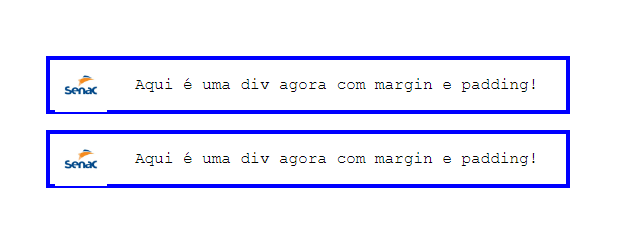
Figura 16 – Exemplo de margin e padding
Fonte: Senac EAD (2023)
Na imagem, há dois blocos com bordas azuis e fundo branco. Dentro do bloco, o logo do Senac e, ao lado, a frase “Aqui é uma div agora com margin e padding”.
O que aconteceu no fim das contas? O margin-top criou uma margem entre cada <div>, no topo de cada uma delas, dando esse espaçamento necessário. O float: left jogou a imagem para a esquerda e o padding-left fez com que ela saísse da borda da caixa e ficasse alinhada com o texto. É simples assim, porém os valores necessários para cada uso de margin e padding sempre terão de ser analisados e testados enquanto a página está sendo montada.
Ambos utilizam uma lógica similar para poder trabalhar com os seus espaçamentos. Todo elemento tem quatro possíveis espaçamentos.
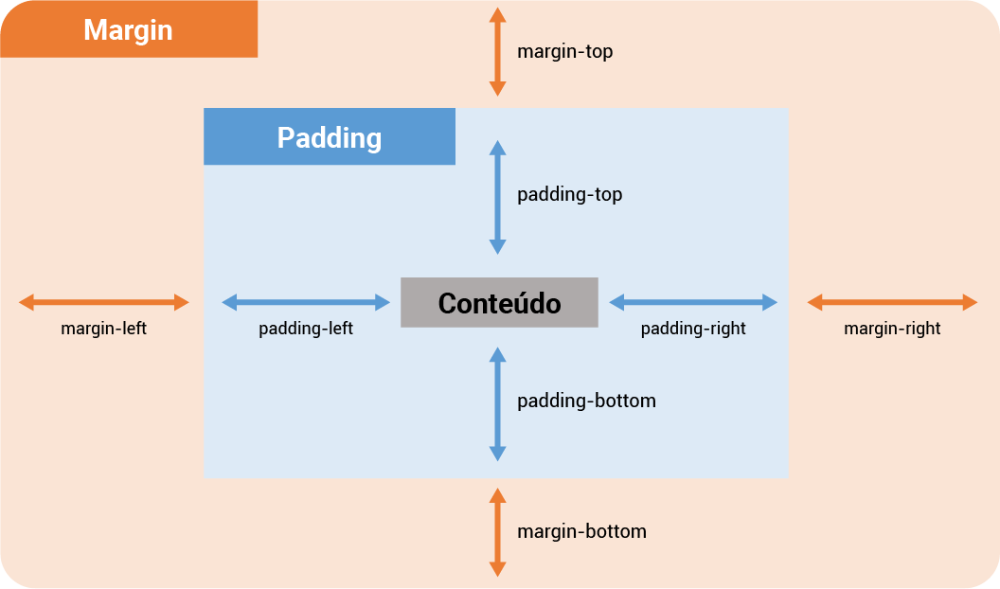
Figura 17 – Exemplo visual dos espaçamentos
Fonte: Senac EAD (2023)
Na imagem, há um quadrado laranja com a palavra “Margin” no canto superior esquerdo. Em cada canto da imagem, há setas laranjas de duas pontas, com as palavras “margin-left”, “margin-right”, “margin-top” e “margin-bottom”. Dentro desse quadrado laranja, há um quadrado azul com a palavra “Padding” no canto superior esquerdo. Em cada canto desse quadrado, há setas azuis de duas pontas, com as palavras “padding-left”, “padding-right”, “padding-top” e “padding-bottom”. No centro do quadrado azul, há um retângulo cinza com a palavra “Conteúdo”.
Veja a seguinte divisão de margin:
margin-top: [valor][unidade de tamanho]
margin-right: [valor][unidade de tamanho]
margin-left: [valor][unidade de tamanho]
margin-bottom: [valor][unidade de tamanho]
E o mesmo vale para o padding:
padding-top: [valor][unidade de tamanho]
padding-right: [valor][unidade de tamanho]
padding-left: [valor][unidade de tamanho]
padding-bottom: [valor][unidade de tamanho]
Então, é possível aplicar esses espaçamentos sempre que necessário dentro de qualquer conteúdo. Por exemplo, em uma <div> cheia de texto, pode-se usar o padding para deixar tudo mais alinhado:
.caixa p {
padding-top: 10px;
padding-right: 5px;
padding-left: 3px;
padding-bottom: 5px;
}
E é isso que se tem para os espaçamentos de padding e margin! Evidentemente, todo esse processo de criação é importante para ir testando os valores que mais se adaptam aos conteúdos criados.
Digitar quatro linhas, uma a uma, para os espaçamentos é extremamente cansativo. Então, pode-se usar uma outra técnica para cumprir esse papel. No trecho CSS anterior, no qual foram aplicados quatro paddings diferentes, poderia ter sido feito desta forma:
padding: 10px 5px 3px 5px
Isso facilita (e muito) a qualidade do código. É importante lembrar que ele sempre respeita uma ordem, então sempre será desta forma:
padding: [top] [right] [left] [bottom]
E é possível usar isso para margin da mesma forma, sem problemas!
A propriedade float, vista anteriormente, serve para alinhar um elemento à direita ou à esquerda do container onde ele está, permitindo que texto ou outros elementos em linha possam se posicionar ao lado do elemento afetado. Veja o exemplo a seguir:
<body>
<div>
<img src="rosa.jpg" alt="rosa vermelha" class="img-esquerda"/>
<p>A rosa é uma das flores mais populares no mundo. Vem sendo cultivada pelo homem desde a Antiguidade.</p>
</div>
<div>
<img src="violeta.jpg" alt="violetas lilases" class="img-direita"/>
<p>Violaceae, a família das violetas, contém cerca de 26 gêneros e 900 espécies de plantas herbáceas, arvoretas, arbustos ou menos frequentemente lianas.</p>
</div>
</body>
Para o CSS:
div{
border: 2px solid black;
width: 50%;
overflow:auto;
}
.img-esquerda{
float:left;
width: 220px;
}
.img-direita{
float:right;
width: 220px;
}
A classe img-esquerda define um alinhamento à esquerda com float:left e a classe img-direita usa float:right para alinhar a imagem à direita do container (<div>). Na regra “div”, ainda definimos overflow:auto. O overflow é uma propriedade usada para definir o comportamento de um elemento quando seu conteúdo ultrapassar em largura ou altura as dimensões do container. Aqui, usa-se auto para que <div> se adapte ao conteúdo (experimente retirar essa propriedade e veja o resultado), mas a propriedade pode ainda levar valores como visible (valor padrão), hidden (corta o trecho do conteúdo que ficou fora do container) e scroll (inclui barra de rolagem no container).
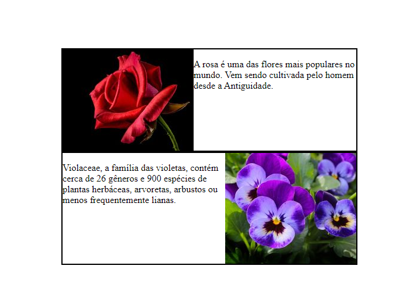
Figura 18 – Imagens com propriedade float
Fonte: Senac EAD (2023)
Acima, veja um quadro contornado de preto ocupando metade da largura da página e que contém uma imagem de uma rosa à esquerda e um texto à direita da imagem. Abaixo, outro quadro com um texto à esquerda e uma imagem de violetas à direita.
Agora que você tem o conhecimento mais abrangente de margin e padding, é interessante praticar! Tente emular uma estrutura 3x3 de blocos, tendo uma imagem, um título e um texto em cada um dos blocos. Exemplo visual:
Figura 19 – Exemplo visual para desafio
Fonte: Senac EAD (2023)
Na imagem, há 6 blocos, 3 na linha de cima e 3 na linha debaixo, todos com o mesmo conteúdo interno: uma imagem com o logo do Senac, abaixo a palavra “Título” e abaixo a frase “Texto descritivo”.
Durante o conteúdo, algumas unidades de medida foram utilizadas para poder estilizar os exemplos. Mas quais são elas? Quais são as corretas e quais as suas diferenças?
Primeiro, é preciso separar essas unidades entre absolutas e relativas. A seguir, entenda cada uma delas.
Bem simples de entender, as unidades absolutas têm esse nome porque elas jamais alterarão o seu tamanho, independentemente da largura da tela. Antigamente, como havia monitores com padrões de resolução e tamanho, eram as mais usadas, pois eram de fácil adaptação e criação. Porém, como hoje as páginas devem se adaptar a telas diferentes, como celulares, tablets, monitores desktop e afins, algumas caíram em desuso. São elas:
Hoje, as unidades relativas são as que dominam as unidades de medida no CSS. Elas procurarão sempre se adaptar ao comportamento que foi definido no HTML e no início do CSS (como o tamanho máximo de uma <div>) e também às telas que ele está desenvolvendo. São elas:
.elemento-pai {
font-size: 100px;
}
.texto{
font-size: 0.5em;
}
Nesse exemplo, o elemento-pai tem 100 px, isto é, 1 em = 100 px. Logo, foi definido que o font-size seja de 0,5 em, no caso 50 px. É ótimo utilizar o em para ter mais controle acerca das alterações que se faz e, ainda, garantir a adaptação a telas menores e afins.
A seguir, veja uma seleção de algumas propriedades úteis para posicionamento de elementos na página:
| Propriedade | Descrição | Exemplo |
|---|---|---|
| bottom, top, left, right | Posicionamento de um elemento a partir da base, do topo e da extremidade esquerda ou direita do elemento-pai. Geralmente é usado em conjunto com position: absolute ou position: fixed. |
|
| position | Tipo de posicionamento de um elemento. Os valores mais comuns são static, valor padrão que reflete o fluxo do documento; absolute, para posicionar com relação ao primeiro elemento anterior que não seja static; fixed, para posicionar com relação à tela do navegador; relative, para posicionar com relação à posição natural que o elemento ocuparia. |
|
| text-align | Alinhamento do texto em um container. |
|
| vertical-align | Alinhamento vertical de um elemento inline ou com propriedade display inline ou inline-block. |
|
| z-index | Definição da ordem de posicionamento de um elemento. Geralmente é usado para sobrepor um elemento a outros (um modal, por exemplo). |
|
Tabela 3 – Propriedades úteis para posicionamento de elementos na página
Fonte: Senac EAD (2023)
Dentro do CSS3, há diversas maneiras de editar e deixar visuais as páginas sem nem ainda ter entrado em JavaScript, por exemplo. E é graças a muitos efeitos práticos, simples e dinâmicos que é possível levar tudo para dentro do CSS!
Veja, a seguir, os efeitos que se podem ser realizados em links e em botões, pois são efeitos simples e fáceis.
Primeiro, monta-se o HTML:
<div class="buttons">
<button type="button" class="effect effect-1">Efeito</button>
</div>
São apenas três botões simples para depois aplicar o CSS em cima disso.
Aplique a tecnologia do hover e do transition.
Hover: faz um efeito quando o cursor do mouse está em cima; pode ser uma troca de cor, uma troca de fonte etc.
Transition: faz uma transição de um efeito para outro, dada uma duração específica.
.buttons {
text-align: center;
margin-top: 3em;
}
.effect{
border:none;
color:#fff;
padding: 20px;
margin: 10px;
font-size: 24px;
border-radius: 10px;
position: relative;
box-sizing: border-box;
cursor: pointer;
transition: all 400ms ease;
}
A estrutura dos botões, o tamanho, a fonte, as margens e também a transição que terá em cada um deles foram definidos.
Agora, é hora de aplicar o efeito!
.effect-1::before{
content: '';
position: absolute;
top: 0px;
left: 0px;
width: 0px;
height: 64px;
background: rgba(255,255,255,0.3);
border-radius: 10px;
transition: all 2s ease;
}
.effect-1:hover:before{
width: 100%;
}
Veja, a seguir, o resultado desse efeito de animação com hover e transition:
Um retângulo de fundo verde com as bordas arredondadas com a palavra “Efeito” escrita no centro. Quando o cursor do mouse passa por cima do retângulo, um efeito de sobreposição de cor acontece, vindo da esquerda para a direita, deixando o fundo mais claro. Após 1 segundo retorna a cor normal.
Quando o cursor fica sobre o botão, o efeito acontece, aplicando o transition em todo o botão por dois segundos. E isso é só o começo das funções que podem ser trabalhadas no CSS!
Construa, agora, os dois botões a seguir com os seguintes efeitos. As cores podem ser diferentes, à vontade. Basta usar transition e hover. Não se esqueça de criar as classes para diferenciar os botões!
Dois retângulos, um de fundo azul com as bordas arredondadas com a palavra “Efeito” escrita no centro, ao lado um de fundo vermelho com as bordas arredondadas com a palavra “Efeito”. Quando o cursor do mouse passa por cima do retângulo azul, um efeito de sobreposição de cor acontece, vindo de cima para baixo, deixando o fundo mais claro. Após 1 segundo retorna à cor normal. Quando o cursor do mouse passa por cima do retângulo vermelho, ele fica com fundo branco e letras vermelhas. Após a remoção do mouse, retorna à cor normal.
CSS é incrível, não é? Porém, com grandes poderes vêm grandes responsabilidades. Esta é uma pequena fragmentação de todas as possibilidades que o mundo de estilização traz para você, e domar essas técnicas, sem dúvidas, não será um trabalho fácil.
Existe uma gama de técnicas extras que virão por meio de incansáveis práticas e estudos de tudo que o CSS vem a oferecer, assim como o uso de bootstrap, bibliotecas externas e até mesmo agregação com o JavaScript, que abrirá ainda mais possibilidades, mas agora com programação.
Nunca deixe de pensar no visual das suas páginas e dos seus sistemas. A tecnologia, hoje, anda de mão dadas com a experiência e a interface de usuário, e, tratando-se de Internet, o CSS é um facilitador imenso.